In this writing, I want to share how exploring PBIR visual JSON files led me to discover a gap that changes the way I think about report documentation and AI-assisted analysis. My plan was simple: understand how a matrix visual with field parameters and a calculation group is stored in the PBIR format. Instead, I found that the JSON only tells part of the story — and that teaching Claude to read the full picture led to building an open-source tool.
I didn't expect a routine exploration of JSON files to become a conversation about the limits of AI-assisted report analysis. What I found has implications for anyone who relies on PBIR source files to understand, document, or automate Power BI reports.
1. Setting the Scene: A Report Page with Moving Parts
I started by creating a report page that uses three features together: two field parameters, a calculation group, and a slicer. The first field parameter lets users switch between Brand, Store Code, and Gender on the rows axis. The second field parameter lets users switch between Number of Orders, Total Cost, and Total Quantity on the values axis. The calculation group adds a This Year vs. Last Year comparison layer.
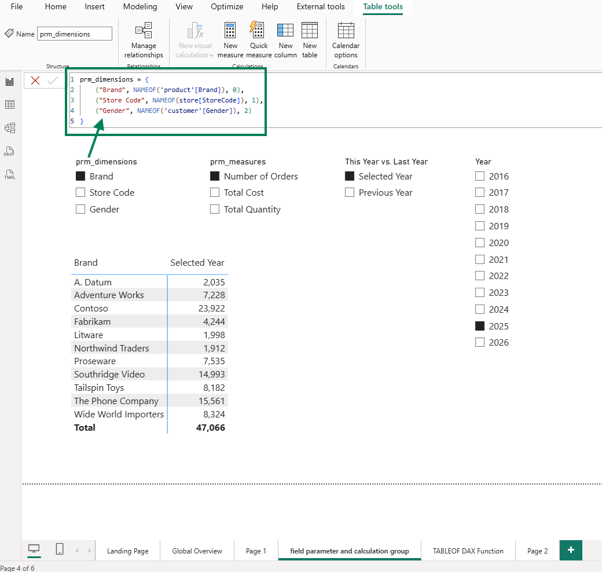
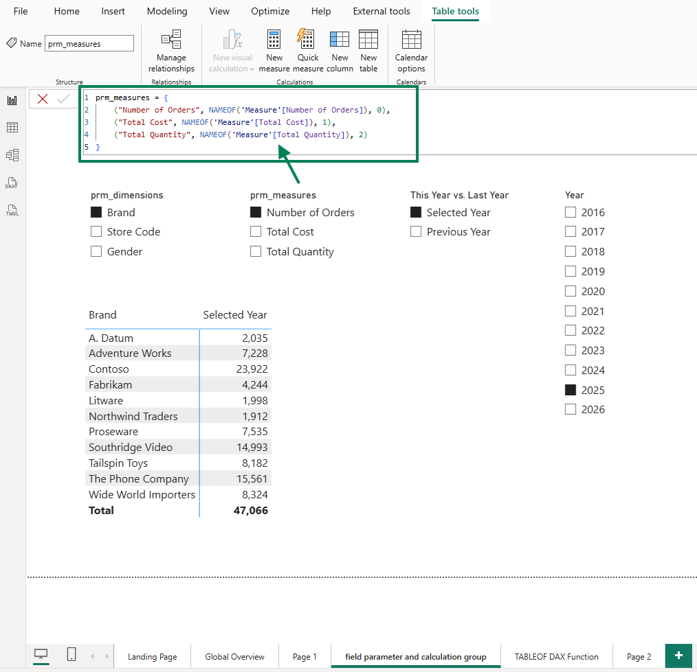
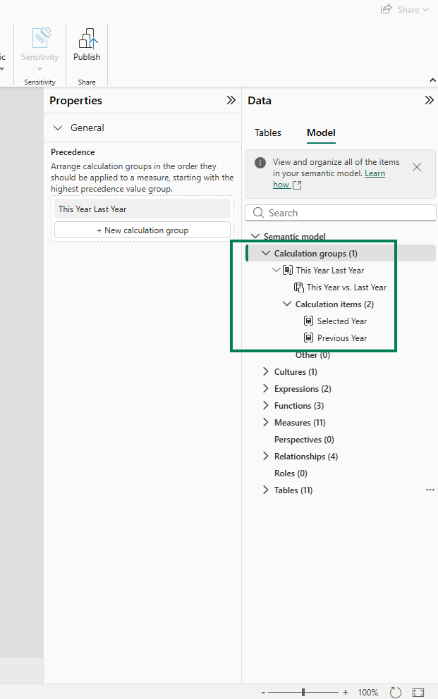
The result is a matrix visual that shows, for the selected year 2025, the number of orders by brand. But the real power is in the interactivity: users can slice and dice, switching dimensions and measures to explore different angles. For instance, users can compare the total quantity by gender between 2025 and 2024.
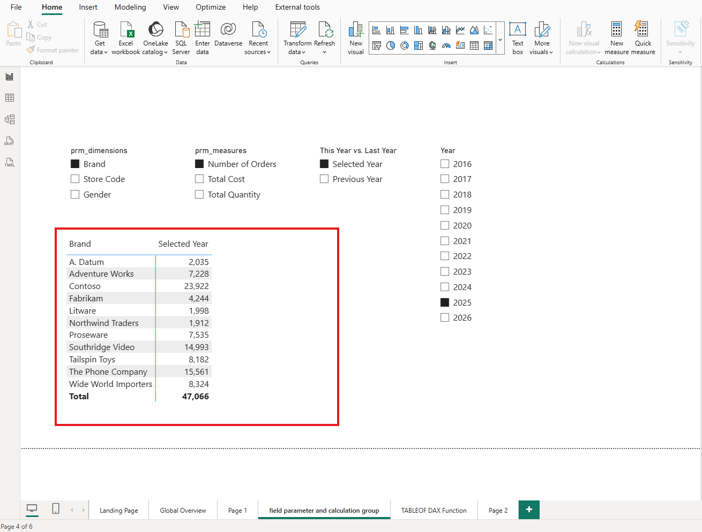
As the report developer, I know exactly what this visual can do. The question is: does the PBIR JSON know it too?
2. The Problem: PBIR JSON Only Captures the Last Saved State
When I saved this report in PBIP/PBIR format and opened the visual's JSON file in VS Code, I expected to see the full configuration. Instead, the JSON told a much smaller story than the visual actually delivers.
Calculation groups are invisible in the JSON
The first thing I noticed: there is no indication in the visual JSON that a calculation group is being used. The column 'This Year Last Year'[This Year vs. Last Year] appears as a regular column reference. Nothing in the JSON distinguishes it from any other column — no marker, no metadata, no hint that this column drives a calculation group with custom DAX logic behind each item.
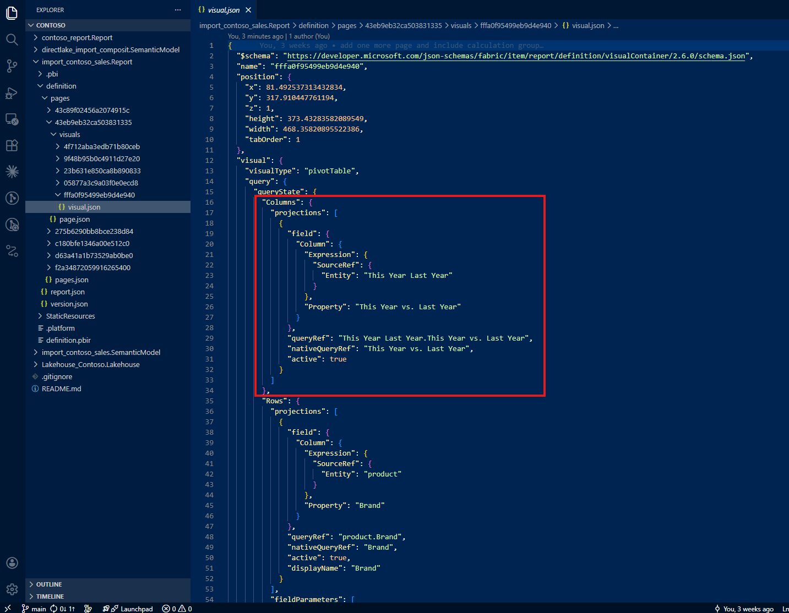
If I were reading this file for the first time, I would have no reason to suspect that a calculation group is involved.
Field parameters show only the last selection
The second surprise was the field parameters. The first field parameter shows only Brand — the last selection I saved before closing the file. There is no mention of Store Code or Gender, even though users can switch to those dimensions at any time.
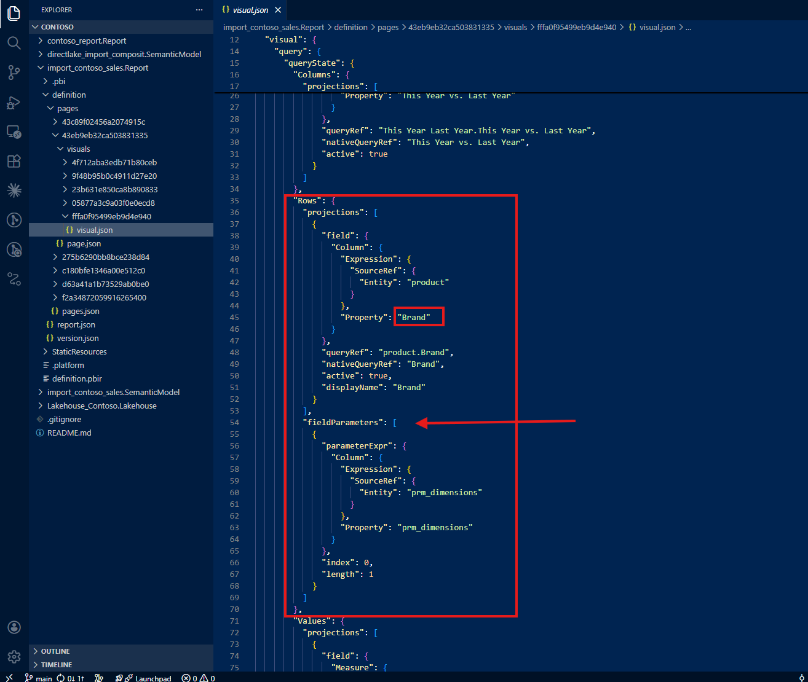
The same pattern repeats for the second field parameter: only Number of Orders appears in the JSON. Total Cost and Total Quantity — the other two options users can select — are nowhere to be found.
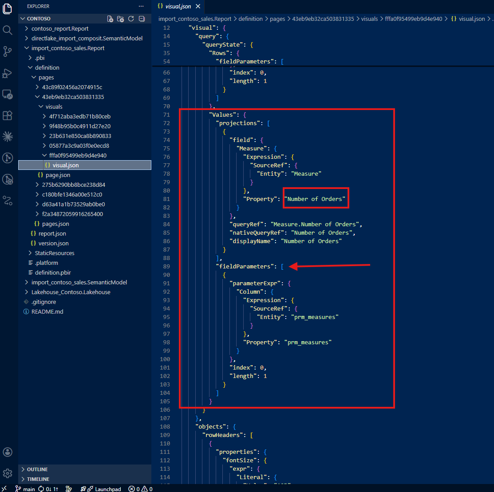
In summary, the JSON file only tells you three things: the 'This Year Last Year'[This Year vs. Last Year] column is used, the visual shows Brand, and the visual shows Number of Orders. That's it. The full picture — three switchable dimensions, three switchable measures, and a calculation group — is invisible.
This was the aha moment. The PBIR format, by design, only writes the last saved state. For static visuals, this is fine. But for visuals that use dynamic features like field parameters and calculation groups, the JSON becomes a partial snapshot, not a complete specification.
3. What This Means for AI-Assisted Analysis
I experienced this gap firsthand. I was right there, working with Claude, asking it to analyze this visualization based on the PBIR JSON — and it gave me incomplete information. It said something like: "This visual shows Number of Orders by Brand with a year comparison." It did not mention Total Cost, Total Quantity, Store Code, or Gender — because those don't exist in the JSON.
I was literally shouting at my screen. I knew this visual could do so much more. I asked: "Can this report show total quantity by gender?" And Claude confidently answered: "No, this report does not show total quantity by gender." That answer, based on the JSON evidence available, was technically justified — but completely wrong. I built this report. I know exactly what it can do. And the AI was telling me my own report couldn't do something it absolutely can.
That frustration became the turning point. If I — the developer who built the report — was getting wrong answers, imagine what happens when someone else asks the same question. The risk is real: incomplete AI analysis leads to duplicated work. A new developer, trusting the AI's assessment, might create additional visuals that already exist in the report. The knowledge gap in the JSON becomes a knowledge gap in the team.
4. Teaching Claude to Trace the Full Picture
As the person who developed this report, I know what the visual contains. The challenge was teaching Claude to discover the same information — not by reading only the report folder, but by tracing references back to the semantic model folder.
This became an iterative collaboration. I didn't just ask Claude to read the JSON — I guided it with the domain expertise that the JSON alone cannot provide.
Tracing calculation groups to the semantic model
My first instruction: "Do not only check the report folder. Always trace to the semantic model folder. Check the column 'This Year Last Year'[This Year vs. Last Year] from the semantic model, and if it tells about a calculation group, do not simply show the table name and column name but describe it as a calculation group with how the calculation group is written."
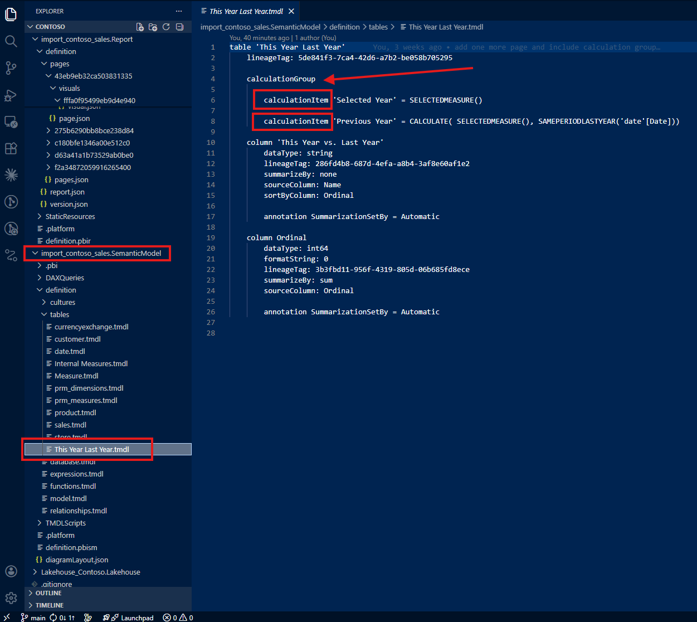
With this guidance, Claude found the calculation group definition in the semantic model's TMDL files. Instead of just reporting a column name, it could now describe the full calculation group: what items it contains, how each item modifies the DAX evaluation context, and what the user experience looks like in the report.
Tracing field parameters beyond the last saved selection
My second instruction: "Do not only check the report folder. Always trace to the semantic model folder, check how field parameters are written, and show not only the last saved selection but all possible selections."
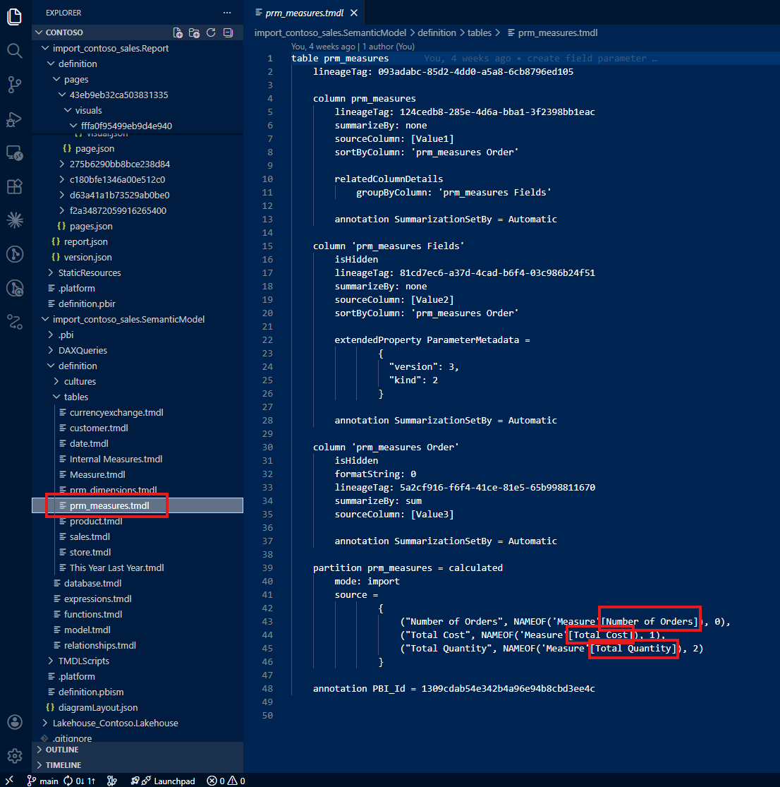
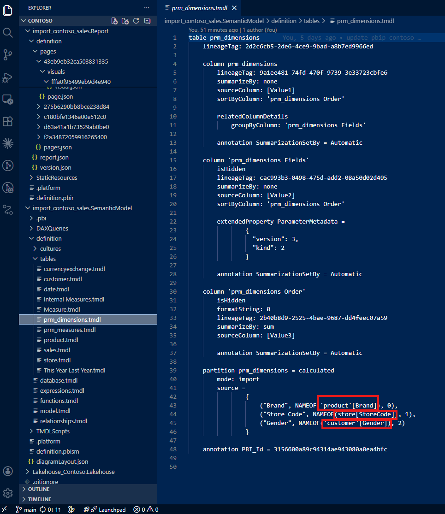
Now Claude could see the full picture: three dimensions (Brand, Store Code, Gender) and three measures (Number of Orders, Total Cost, Total Quantity) — not just the last saved defaults.
Following references to actual columns and measures
My third instruction went deeper: "Do not stop tracing because field parameters reference columns or measures. Trace all the way back to the actual columns and actual measures where those come from and how those are written."
This is where the iterative nature of the collaboration mattered most. Each instruction built on the previous one, and each one required domain knowledge that only I — as the report developer — could provide. Claude brought the ability to parse TMDL files, navigate folder structures, and synthesize information across dozens of files. I brought the understanding of what to look for and why it matters.
5. A Note on Learning with Claude
I want to be transparent about this process. This was how I started to learn together with Claude using the PBIR format. By showing Claude what I do as a daily job — how I check JSON files in report folders and trace references back to semantic model folders — I was teaching it my workflow. And in return, Claude could apply that workflow at a speed and scale that I could not match manually.
Was my guidance actually helpful? Having reflected on it honestly: it was essential. Without domain expertise pointing Claude to the semantic model folder, it would have stopped at the JSON and reported incomplete information — just like any other tool reading the same files. The human contribution was not optional; it was the difference between a partial answer and the full picture.
6. From Exploration to Open Source: pbip-documenter
This iterative process — tracing from report to semantic model, teaching Claude how I read PBIR files, refining the instructions until the output matched what I knew to be true — didn't stop at a single conversation. More work followed, and together we built an application called pbip-documenter, now open source on GitHub.
The tool does what I taught Claude to do, but at scale and for any PBIP project. It traces not only upstream — from a visual to the measures, columns, and tables it depends on — but also downstream — from a measure or column to every visual that uses it. This bidirectional tracing means you can answer both directions of the question: "What does this visual actually show?" and "Where is this measure being used?"
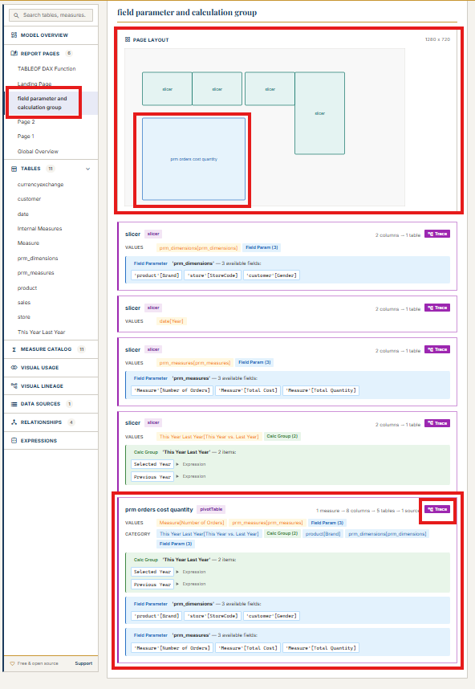
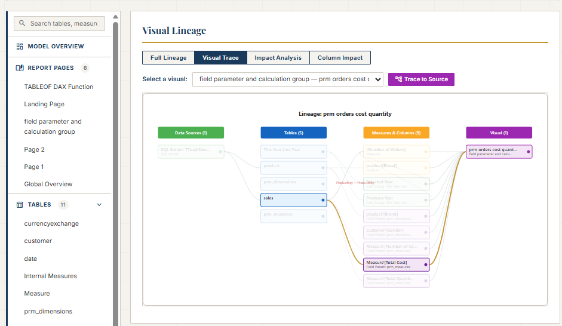
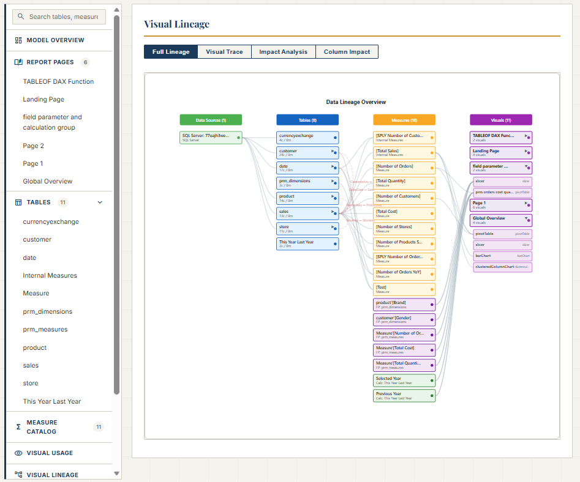
For Power BI developers working with PBIR, this means no more guessing whether the JSON tells the full story. The documenter fills the gap by reading both the report and semantic model folders, connecting the dots that the PBIR format leaves disconnected. It's open source, and you can find it at github.com/JonathanJihwanKim/pbip-documenter.
Reflection
This experience left me with a new mental model: PBIR JSON is a serialization format, not a documentation format. It captures what Power BI Desktop needs to reconstruct a visual, not what a human or an AI needs to understand it. For static visuals, the difference is negligible. For visuals with field parameters and calculation groups, the difference is the gap between partial knowledge and full understanding.
The journey from "why doesn't the JSON show all the measures?" to building an open-source documentation tool reinforced something I keep discovering: when you combine domain expertise with AI capability, the result is greater than either one alone. Claude could parse files and follow references faster than I ever could. But without my guidance — knowing to trace to the semantic model, knowing what a calculation group looks like, knowing that field parameters hide their full configuration — the AI would have stopped at the same incomplete picture that the JSON provides.
I hope this helps having fun in exploring PBIR format and embracing this new era of understanding Power BI reports as code — gaps, hidden details, and all!